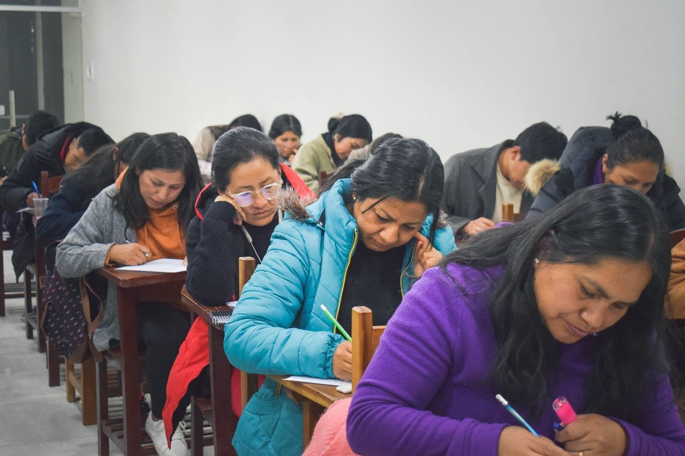
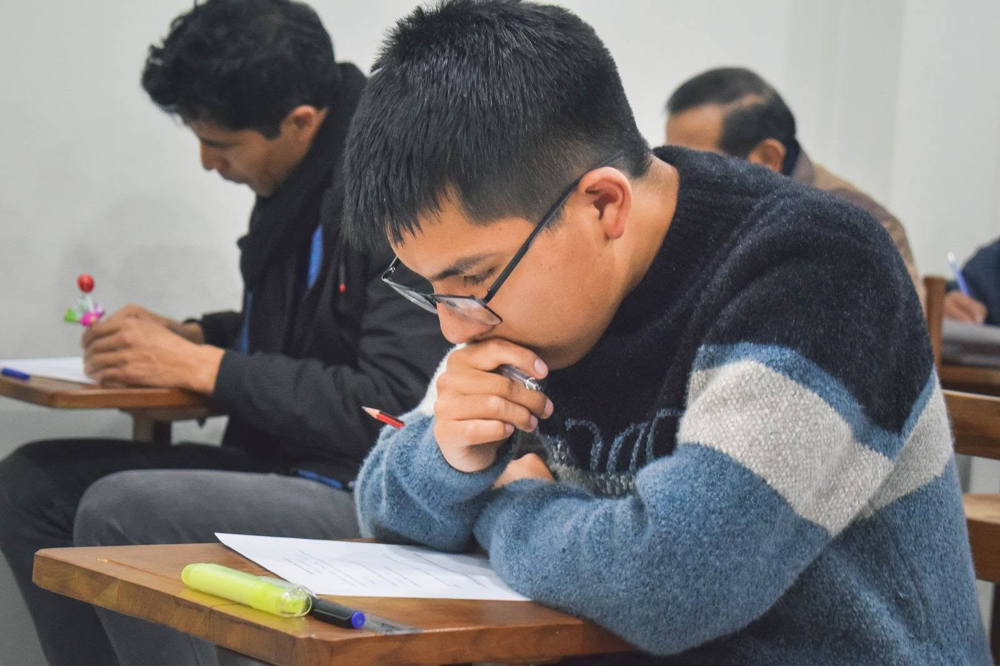
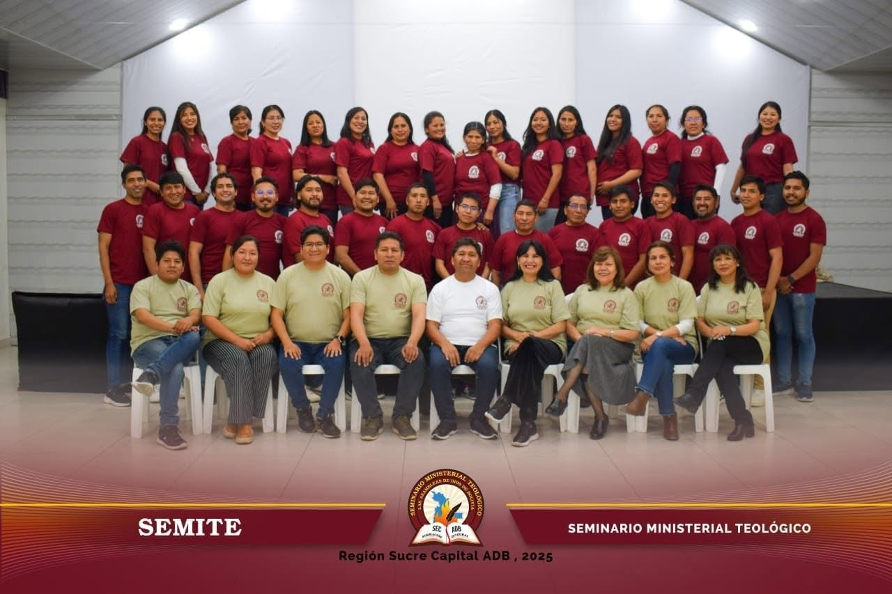
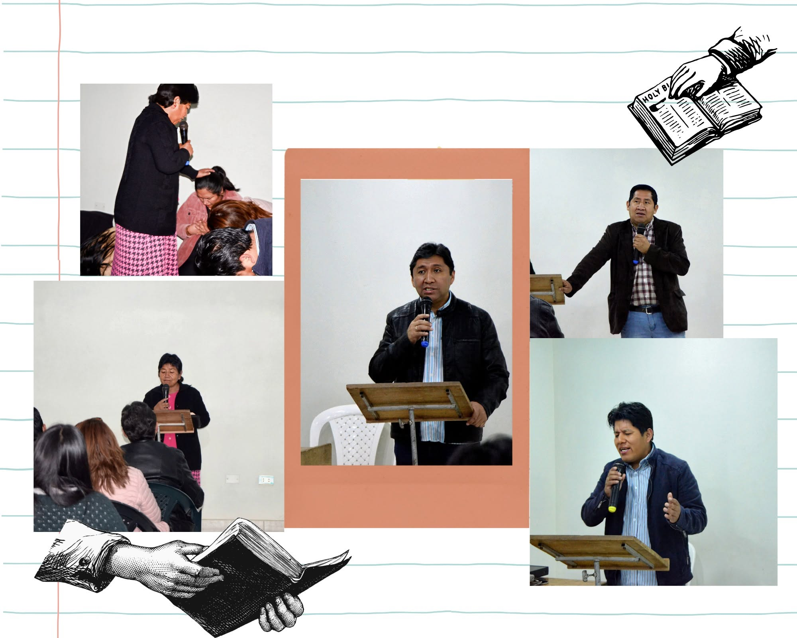
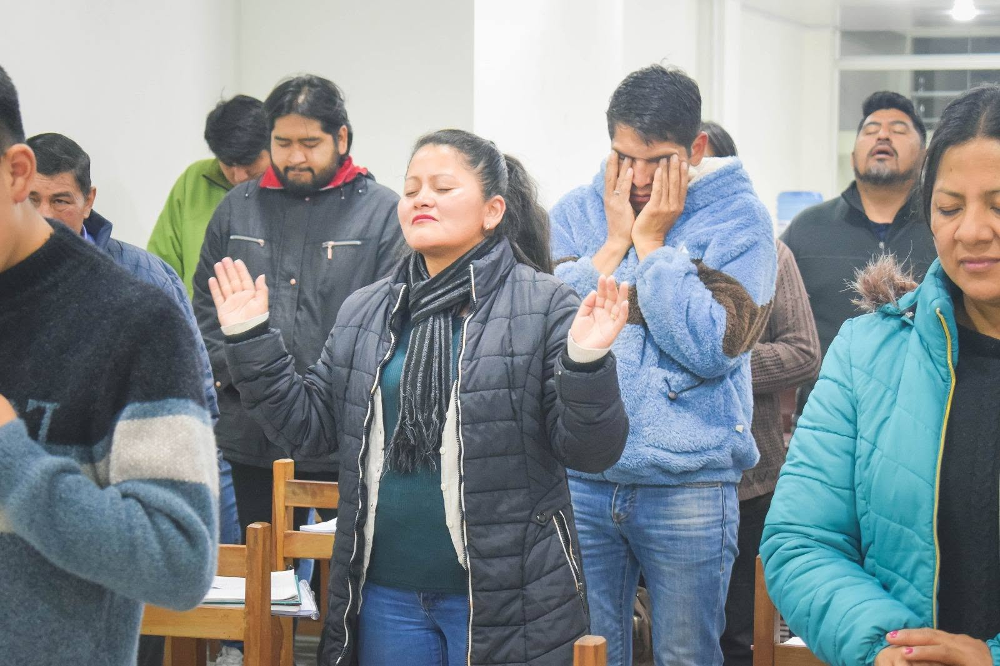

Las Asambleas de Dios de Bolivia · ADB
Dile Sí al
Llamado de Dios
Capacítate para servir a Dios con excelencia · Seminario Ministerial Teológico SEMITE ADB
Las Asambleas de Dios de Bolivia · Seminario Ministerial Teológico
Programa Académico
Los principios que guían nuestra formación bíblica, teológica y ministerial.
Nuestros objetivos
- Formar obreros cristianos para un ministerio eficaz.
- Entrenar a los estudiantes a pensar bíblicamente y aplicar la palabra de Dios en su vida diaria de tal manera que Cristo sea reflejado en sus vidas.
- Brindar herramientas bíblicas, ministeriales, teológicas y académicas.
- Formar en su carácter.
- Incentivar el mover pentecostal en la formación cristiana y ministerial de los estudiantes.
- Estimular el fervor evangélico, pastoral y misionero.
Nuestra Visión
Ser una institución cristiana pentecostal de formación de siervos cristianos íntegros, que son agentes de cambio en la sociedad, ejerciendo el ministerio de la predicación, enseñanza de la sana doctrina y de la piedad con el prójimo.
Nuestra Misión
Somos una institución evangélica pentecostal que promueve una educación bíblica y cristocéntrica a través de la interacción de conocimientos y el desarrollo de habilidades, logrando en el estudiante una actitud de servicio a Dios, a la iglesia y la sociedad.
Plan de estudios · SEMITE Bolivia
Pensum académico
8 semestres de formación bíblica, teológica y ministerial. Materias organizadas por código, créditos (U) y horas (H), aprobadas por el Servicio de Educación Cristiana (SEC Bolivia).
| Código | Materia | Cr. | Hrs. |
|---|---|---|---|
| B1013 | Panorama Antiguo Testamento y Geografía | 3.0 | 48 |
| B1023 | Panorama Nuevo Testamento y Orígenes | 3.0 | 48 |
| M2012 | Oratoria y Homilética | 2.0 | 32 |
| M1023 | Evangelismo y Discipulado | 3.0 | 48 |
| G1202 | Métodos de Estudio e Investigación | 3.0 | 48 |
| T1102 | Teología Sistemática I (Doctrina, Teología, Bibliología) | 3.0 | 48 |
| Código | Materia | Cr. | Hrs. |
|---|---|---|---|
| B1043 | Pentateuco | 3.0 | 48 |
| B1053 | Hechos | 3.0 | 48 |
| B1033 | Evangelios Sinópticos | 3.0 | 48 |
| EEC4102 | Educación Cristiana y Pedagogía | 3.0 | 48 |
| G1013 | Gramática Castellana y Composición | 2.0 | 32 |
| T1202 | Teología Sistemática II (Antropología, hamartiología y angelología) | 3.0 | 48 |
| Código | Materia | Cr. | Hrs. |
|---|---|---|---|
| B2013 | Romanos y Gálatas | 2.0 | 32 |
| B2022 | Epístolas Carcelarias | 2.0 | 32 |
| B2033 | Libros Históricos | 3.0 | 48 |
| G1013 | Administración y Contabilidad | 2.0 | 32 |
| M2012 | Homilética II | 2.0 | 32 |
| M2022 | Hogar Cristiano | 3.0 | 48 |
| T2102 | Teología Sistemática III (Cristología, soteriología, escatología) | 3.0 | 48 |
| Código | Materia | Cr. | Hrs. |
|---|---|---|---|
| B2042 | Epístolas Generales | 2.0 | 32 |
| B2052 | Evangelio de Juan | 2.0 | 32 |
| PA4302 | Gobierno Eclesiástico | 2.0 | 32 |
| M2032 | Didáctica y Andragogía | 2.0 | 32 |
| M3102 | Ética y Teología Ministerial | 3.0 | 48 |
| T2022 | Hermenéutica | 3.0 | 48 |
| T2203 | Teología Sistemática IV (Eclesiología, pneumatología) | 3.0 | 48 |
| Código | Materia | Cr. | Hrs. |
|---|---|---|---|
| B3013 | 1 y 2 Corintios, 1 y 2 Tesalonicenses | 3.0 | 48 |
| B3022 | Epístolas Pastorales | 2.0 | 32 |
| B3032 | Libros Poéticos | 3.0 | 48 |
| M3202 | Consejería Pastoral | 2.0 | 32 |
| B2502 | Profetas Mayores | 3.0 | 48 |
| T3023 | Historia Eclesiástica | 2.0 | 32 |
| G4202 | Psicología Ministerial | 2.0 | 32 |
| Código | Materia | Cr. | Hrs. |
|---|---|---|---|
| B3042 | Hebreos | 2.0 | 32 |
| B3052 | Profetas Menores | 2.0 | 32 |
| B3063 | Apocalipsis y Daniel | 3.0 | 48 |
| T4102 | Apologética y Doctrinas Falsas | 3.0 | 48 |
| EPI4102 | Iglecrecimiento y Plantación de Iglesias | 3.0 | 48 |
| PA4302 | Historia de AD | 2.0 | 32 |
| M11032 | Misiones | 2.0 | 32 |
Nota de aprobación: 70 de 100 puntos · Nota de reprobación: 69 puntos o menos.
Vida en el seminario
Galería fotográfica




Calendario académico
Horarios de clases
El SEMITE ofrece formación vespertina, pensada para siervos del Señor que trabajan durante el día. Cada sesión es una oportunidad de crecer en la Palabra y el ministerio.
Cuerpo docente
Facilitadores y docentes
Ministros con años de experiencia en el campo y la academia, comprometidos con la excelencia y la unción.
Experiencia Ministerial
Cada docente es un ministro activo, con años de servicio en la iglesia local y el campo misionero.
Formación Académica
Preparación teológica formal que garantiza enseñanza rigurosa, contextualizada y edificante.
Pasión por Enseñar
Un llamado genuino a transmitir la Palabra con claridad, gracia y poder del Espíritu Santo.
¿Tienes dudas?
¡Vive tu propia
experiencia SEMITE!
Todo lo que necesitas saber antes de comenzar tu formación ministerial.
Hablar con nosotros →Solo necesitas ser creyente bautizado, se mayor de 18 años, contar con la recomendación de tu pastor local y completar el formulario de inscripción. No se requieren estudios previos en teología.
El programa tiene una duración de 3 años, divididos en seis semestres. Cada semestre incluye módulos de diferentes áreas de la formación teológica y ministerial.
Al completar el programa, los egresados reciben el título de Ministro Teológico avalado por las Asambleas de Dios de Bolivia (ADB) y el Consejo Superior Eclesiástico (SEC).
Actualmente las clases son presenciales en Sucre. Estamos desarrollando la modalidad virtual para llegar a todo Bolivia y el mundo. ¡Inscríbete para recibir novedades!
Inscripciones abiertas